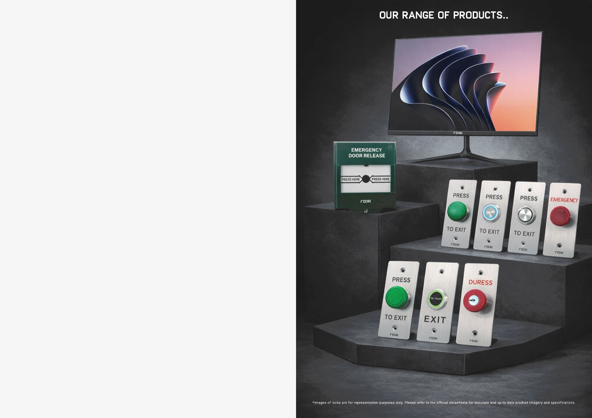
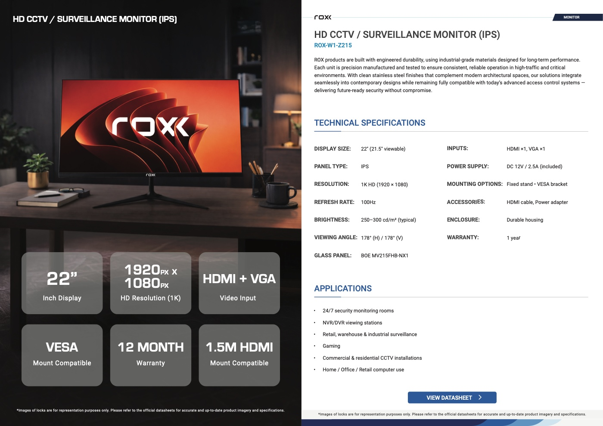
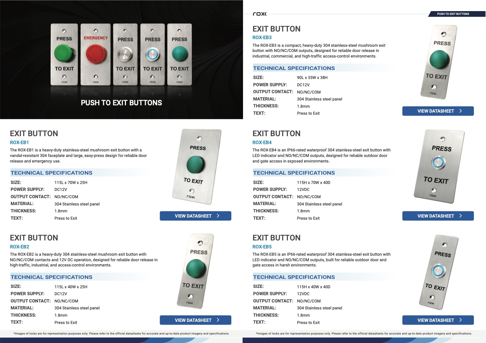

Brochure & catalogue design
ROX Catalogue
A product-led catalogue balancing an industrial brand presentation with practical technical detail.

THE COMPLETE PUBLICATION
Explore the catalogue.
View the complete original document, including all product information and page layouts.
View catalogue PDF01 / PURPOSE
A clear introduction.
Present the ROX range of professional security and access-control hardware. The publication moves from the brand and product overview into monitoring, exit controls, and supporting technical information.
02 / AUDIENCE
Designed for the reader.
Installers, specifiers, and customers comparing hardware for commercial and industrial settings. The catalogue combines product presentation with model codes, specifications, application information, and datasheet links.
03 / LAYOUT
A consistent reading order.
A dark textured cover establishes the industrial visual language. Interior spreads contrast larger product presentations with white technical panels, blue section accents, and a repeated specification hierarchy.
04 / DESIGN RATIONALE
Why this visual direction.
The contrast between image-led and information-led areas gives the catalogue two useful reading speeds. Readers can identify the product family quickly, then move into the specifications. Repeating the same labels and page structure makes the information more predictable across the range.
05 / CRITICAL REASONING
Clarity before decoration.
A strong visual presentation must not obscure the details used to select hardware. Similar products need clear codes, readable measurements, and consistent specification labels. The catalogue’s own imagery note directs readers to official datasheets for accurate, current imagery and specifications; the page design needs to preserve that distinction.
INSIDE THE PUBLICATION
Selected pages.
Explore the original artwork. Select a preview to open its page in the PDF.


